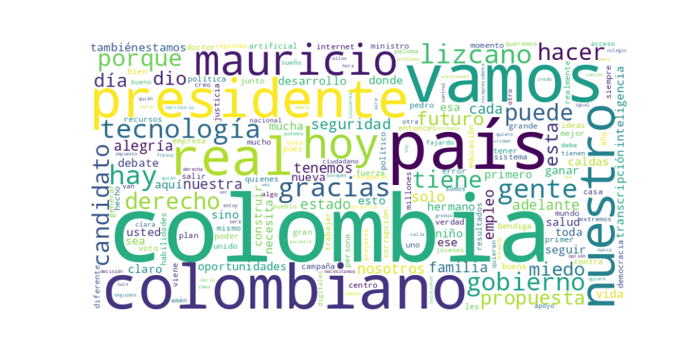

Seguidores: 69,272
1. Perfil de Comunicación: El candidato presenta un estilo de comunicación híbrido que combina un tono cercano y coloquial con momentos de formalidad técnica. Se comunica de manera directa y personal, utilizando un lenguaje accesible y emocional (“gente”, “familia”, “sueños”), pero recurre a un registro más técnico y propositivo cuando detalla sus planes de gobierno, especialmente en temas como tecnología, economía o salud. Se posiciona como un interlocutor próximo (“escuchando a la Colombia real”), alejado de la élite política tradicional, aunque su discurso revela experiencia en gestión pública.
2. Temas Principales: * Tecnología como motor de desarrollo: Es el eje central y diferenciador de su propuesta. Lo plantea como solución transversal para generar empleo, riqueza, mejorar la salud, la seguridad y la educación. Ejemplo: “Convertir a Colombia en un país productor de tecnología... la base para poder dar ese salto en ingresos y en calidad de vida”. * Seguridad y Orden Público: Aborda la inseguridad con un tono de urgencia y firmeza, proponiendo medidas contundentes como “bloques de búsqueda” élite, tecnología de vigilancia y fortalecimiento de la fuerza pública. Ejemplo: “Colombia no puede seguir viviendo con miedo... recuperar el control del territorio y garantizar que quien delinque sí enfrente a la justicia”. * Salud: Critica la crisis del sistema y propone acciones inmediatas y concretas, como declarar una “emergencia humanitaria” y crear un “corredor humanitario” para la distribución de medicamentos. Ejemplo: “Desde el primer día declararemos emergencia humanitaria. Los medicamentos tienen que llegar, sin excusas, sin trámites eternos...” * Rechazo a la polarización y la “política tradicional”: Se define como la alternativa al “uribismo” y al “petrismo”, acusándolos de mantener al país estancado en peleas ideológicas. Promueve un “centro” unido y pragmático. Ejemplo: “El gran enemigo de Colombia no es la derecha ni la izquierda, es la corrupción... Es momento de una política que escuche al ciudadano de a pie”. * Familia y “Colombia Real”: Utiliza constantemente el concepto de “familia” como valor central y base de su plan de gobierno (F.A.M.I.L.I.A). “La Colombia real” es su constructo retórico para referirse al ciudadano común, trabajador, alejado de los círculos de poder de Bogotá. Ejemplo: “Todo empieza en la familia y ahí se construye el futuro... La verdadera encuesta está en la calle, con la Colombia real”.
3. Tono y Sentimiento Dominante: El tono general es propositivo y esperanzador, pero con una crítica firme y confrontacional hacia los gobiernos y sectores políticos que considera responsables de los problemas actuales. Transmite un sentimiento de urgencia (“no puede seguir así”, “es ahora”) combinado con optimismo en la capacidad de cambio (“vamos a ganar”, “construyamos juntos”). Hay un claro esfuerzo por proyectar seriedad técnica y decisión, alejándose del “discurso” para enfatizar “resultados”.
4. Palabras Clave de Poder: * Colombia real (su marca central y antítesis de la “Colombia política”) * Sin miedo / Derecho a la alegría (eslogan emocional recurrente) * Propuestas (reales) / Soluciones (concretas) (contraposición al “discurso”) * Tecnología (presentada como sinónimo de futuro, progreso y solución) * Gente (nueva) / Familia (apelación al ciudadano común y a valores tradicionales) * Extremos / Polarización (enemigos a vencer: uribismo y petrismo) * Resultados (énfasis en gestión y eficacia versus ideología)
5. Conclusión Estratégica: La estrategia de comunicación de Mauricio Lizcano se articula en presentarse como la alternativa técnica, moderna y conciliadora frente a una política tradicional que percibe como polarizada, ineficaz y corrupta. Su discurso busca conectar con un electorado pragmático, cansado de la confrontación ideológica y atraído por soluciones concretas, apelando tanto al anhelo de seguridad y bienestar como a la esperanza en un futuro de progreso basado en la innovación. Habla a una “Colombia real” que se identifica con valores familiares y el trabajo duro, ofreciéndose como un puente entre la experiencia de gobierno y la renovación generacional. Su objetivo es evocar confianza por competencia, esperanza por un proyecto de país unificado y una sensación de urgencia para el cambio, posicionándose como el candidato del centro con un plan claro y ejecutable.
Reporte de Análisis Estratégico de Comunicación
1. Resumen del Patrón de Éxito: El contenido más exitoso del candidato se basa en una fórmula híbrida de propuesta concreta y confrontación emocional. No se limita a discursos abstractos, sino que combina diagnósticos duros de problemas nacionales (inseguridad, falta de oportunidades) con soluciones específicas presentadas como "planes claros" o "acciones ya probadas". Se posiciona como un outsider pragmático y tecnocrático, pero con un tono de urgencia y batalla contra un establishment político fallido. La emoción dominante es una esperanza activa, canalizada a través de la promesa de un cambio tangible liderado por una nueva generación.
2. Tácticas de Comunicación Clave:
3. Temas de Mayor Resonancia: 1. Seguridad Integral: Es el tema central y más visceral. Lo aborda desde dos frentes: la mano dura tecnológica (bloques de búsqueda, inteligencia artificial) y las causas raíz (falta de oportunidades, justicia lenta). El mensaje de "sin justicia no hay seguridad" sintetiza este enfoque. 2. Tecnología como Palanca de Desarrollo: Es su gran diferenciador programático. Conecta la tecnología con movilidad social (computadores para estratos 1 y 2), productividad (desarrollo regional) y eficiencia estatal. 3. Renovación Generacional y Rechazo a los Extremos: El mensaje de "gente diferente para resultados diferentes" y su autodefinición como "la nueva generación" resuena como un llamado a la desafección con el bipartidismo tradicional. 4. Desarrollo Regional con Identidad: Habla de "vocaciones productivas" específicas (café, turismo), articulando gobierno local, empresarios y universidades. Promete llevar desarrollo sin homogenizar.
4. Perfil de la Audiencia Implícita: El discurso apunta claramente a un electorado joven o de mentalidad moderna, urbano y con aspiraciones de movilidad social, frustrado con la política tradicional pero escéptico ante los populismos. También busca conectar con votantes pragmáticos de centro que priorizan soluciones concretas sobre ideología. El uso intensivo de términos tecnológicos y referencias a emprendimiento, conectividad y capital de riesgo sugiere que busca al "profesional", al "estudiante" y al "pequeño empresario" digital. No habla a la base leal de un partido, sino a los indecisos y desencantados que buscan una alternativa creíble y no radical.
5. Conclusión Estratégica: La clave fundamental del poder de su discurso es la fusión de un ethos de outsider con un logos de tecnócrata probado. Se desmarca del "ruido" y la "emoción" de sus rivales (a los que critica justamente por eso) ofreciendo en su lugar "ideas, propuestas y resultados". Su potencia radica en que no es un discurso puramente emocional ni puramente técnico; es emocional en el diagnóstico (describiendo un país en crisis) y técnico en la solución (detallando planes con tecnología y métricas). Se presenta como el "anti-político" que, irónicamente, tiene el historial ministerial para demostrar que sus ideas funcionan. Su diferenciador es ser el candidato del "cómo" en una contienda donde sus oponentes suelen quedarse en el "qué".

Caption: Sin justicia no hay seguridad. Vamos a reformarla para que funcione y castigue de verdad a los bandidos.
Likes: 101 | Comentarios: 4 | Reproducciones: 1,341
Ver en InstagramCaption: La seguridad no es solo balín. Es desarrollo, oportunidades y bienes públicos. Solo tendremos un país seguro cuando combinemos mano dura con oportunidades para la gente. Nuestra propuesta es clara: una seguridad integral para Colombia.
Likes: 69 | Comentarios: 3 | Reproducciones: 940
Ver en InstagramCaption: El desarrollo de las regiones se construirá con tecnología, aprovechando las vocaciones productivas propias de cada territorio. Al articular esfuerzos entre el gobierno, el Estado, el sector empresarial y el comercio local, impulsaremos aquello que cada región hace mejor, transformándolo en oportunidades reales de crecimiento y bienestar para su gente.
Likes: 115 | Comentarios: 10 | Reproducciones: 1,570
Ver en Instagram